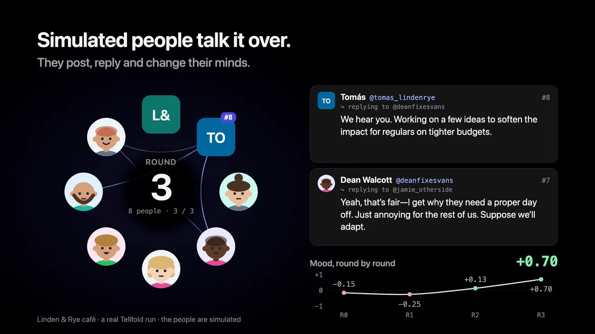

Dorotea Vance @dorotea_coffeefan+0.85 #12
Round 2, replying to @lindenandrye #1
Nine years watching you treat staff right and keep the board running—this is fair. I’ll adjust my budget. See you at the 26th.
Tellfold for Mac
Give it a price change, a new rule, a plan or an announcement. A crowd of simulated people reads it, talks it over for a few rounds, and folds into one answer.
Free. macOS 15 or later on Apple silicon, with an AI tool signed in: Claude Code, Codex, Gemini CLI, Cursor, Ollama and more.

This is the café run in the picture above, round by round. Every person, post and number here comes from it.
Nine regulars and three café accounts, each with a private stance and a memory.
The café posts its note. Priya calls it a fair trade; Mattia mostly wants to know about the free buns.
Finn does the Neighbour card maths. Eleanor is glad the bread discount stayed. The mood climbs.
Eight replies. The owners answer, most regulars come round, and Jonah asks why it had to be Tuesday. Rounds 3 and 4 stay quiet.
Five camps, one verdict, and a report where every claim cites the posts behind it.
How will regular customers react to the new prices and the Tuesday closing?
Round 0 about to start
Each person reads the café’s note and decides whether to post.
Round 0 3 posts · mean +0.40
Linden & Rye @lindenandrye+0.70 #1
After 9 years on Alder Street, we’re raising prices from 2 March and closing Tuesdays from April. Butter, flour, rent—costs have climbed. …
Priya Osei @priya_lunchbreak+0.60 #2
Losing Tuesday soup is annoying but honestly? Staff burnout is real and margins on independent cafés are thin. …
Mattia Russo @mattia_alderst−0.10 #3
wait free buns at the open evening on the 26th?? what time and also why is everything getting expensive now
Round 1 3 posts · mean +0.62
Finn Lacroix @finn_altcoffee+0.30 #4
replying to @lindenandrye #1
So the Neighbour card is €12/month for a free filter coffee daily? … actually might work if I go most days. Need to do the math before March.
Eleanor Whitfield @eleanor_oldbread+0.85 #5
replying to @lindenandrye #1
Glad you kept the bread discount and that board. Thirty years on this street, I’ve seen places forget their regulars. You haven’t. …
Mattia Russo @mattia_alderst+0.70 #6
replying to @lindenandrye #1
7pm on the 26th? I’m there. Free buns + wifi = excuse to avoid my flat that evening lol
Round 2 8 posts · mean +0.55
Linden & Rye @lindenandrye+0.60 #7
replying to @finn_altcoffee #4
Yes—for daily visitors it works out cheaper than before, even with the price rise. …
Marguerite Dekker @marguerite_alder+0.70 #9
replying to @finn_altcoffee #4
Twelve euros a month is reasonable if I’m there most mornings anyway. Keeps my routine affordable. I’ll try it.
Jonah Fitzgerald @jonah_soupguy−0.70 #10
replying to @lindenandrye #1
Tuesday though? That’s my one proper lunch break. Could you not have picked literally any other day?
Noa Vandermeer @noa_vandermeer+0.65 #14
replying to @priya_lunchbreak #2
… Tuesday’s tough for my schedule but the staff deserve actual rest. I’ll make it work.
And four more replies.
DoneMedium confidence
Regulars broadly accept Linden & Rye’s price rise and Tuesday closure
First reactions from the nine regulars
7 in favour · 1 neither · 1 against
Shops, schools, councils, teams, clubs, landlords, apps. If a group of people will hear about it, Tellfold can rehearse how they take it.
A café or shop
How will regular customers take a 20% price rise?
A school
Will parents back a phone-free school day?
A town council
Will shop owners support closing the main street to cars?
A workplace
How will the team react to three office days a week?
A landlord or housing co‑op
Will tenants accept a rent increase that pays for new repairs?
A club or charity
Will members agree to a higher fee for a new clubhouse?
A run takes a few minutes and keeps going in the background. Watch every round, or come back to the answer.
Step 1
What do you want to find out, what is it about, and how big should the crowd be. Add a letter, a plan or an announcement, or just paste the text.

Step 2
Each person has a private stance and a memory. Round by round they post, reply, repost, like and follow. Drop breaking news into a later round and see whether the mood turns.

Step 3
The report leads with a verdict, how sure it is, and why. Every claim cites the posts and people behind it, and you can interview anyone in the crowd afterwards.

A café’s price rise, talked over round by round, then the Mossbook report with every claim tied to a post. Every post and number here comes from a real run.

The report is written from the simulation record, not from the model’s general opinion. Citations like @handle and #12 open the person and the post behind them.
Support consolidates around the idea that the changes are a fair trade for staff wellbeing and that key perks were kept unchanged, as voiced by , and . A budget-conscious student, , moves from wary to persuaded once he runs the Neighbour card numbers himself (, , ). The one sustained objection comes from , who loses his Tuesday lunch routine and asks “Could you not have picked literally any other day?” ()
All 186 citations checked against the posts
Dorotea Vance @dorotea_coffeefan+0.85 #12
Round 2, replying to @lindenandrye #1
Nine years watching you treat staff right and keep the board running—this is fair. I’ll adjust my budget. See you at the 26th.
Eleanor Whitfield @eleanor_oldbread+0.85 #5
Round 1, replying to @lindenandrye #1
Glad you kept the bread discount and that board. Thirty years on this street, I’ve seen places forget their regulars. You haven’t. That matters more than the price.
Priya Osei @priya_lunchbreak+0.70 #11
Round 2, replying to @finn_altcoffee #4
The math checks out if you’re a regular. And honestly, it’s worth it just to know the staff aren’t burning out.
Finn Lacroix @finn_altcoffee+0.30 #4
Round 1, replying to @lindenandrye #1
So the Neighbour card is €12/month for a free filter coffee daily? That’s what, 26 euros in free coffee vs 12 in subscription… actually might work if I go most days. Need to do the math before March.
Linden & Rye @lindenandrye+0.60 #7
Round 2, replying to @finn_altcoffee #4
Yes—for daily visitors it works out cheaper than before, even with the price rise. The maths on our end is tight, which is exactly why we needed the change.
Marguerite Dekker @marguerite_alder+0.70 #9
Round 2, replying to @finn_altcoffee #4
Twelve euros a month is reasonable if I’m there most mornings anyway. Keeps my routine affordable. I’ll try it.
Jonah Fitzgerald @jonah_soupguy−0.70 #10
Round 2, replying to @lindenandrye #1
Tuesday though? That’s my one proper lunch break. Could you not have picked literally any other day?
Add a newspaper story, a rival’s offer or a post that goes viral to a later round.
Ask a person why they posted what they did. They answer in character, from their memory.
Follow-up questions are answered from the report and the full record.
Before you see the report, Tellfold checks each citation and quote against the run and marks anything it can’t match.
Scrub the rounds and see the same people as camps, on a sentiment spectrum, or by influence.
Save any report as a PDF or a single web page to share with the people deciding with you.
Pick the language the crowd posts in. The report is written in it too.
Open a finished café run and a school run before you set anything up, or start your own from a template.
Before a run starts, Tellfold estimates how many AI calls it will make. Afterwards it shows how many it used.
Tellfold works out who your news affects and builds the crowd from them. Give it what your own customers have said, and the people in the run are written from that.
Add reviews, survey answers, support emails or comments. Each person stands for a group of similar comments, and names, emails and phone numbers are taken out on your Mac before anything is sent.
Tellfold names the groups the announcement touches and how they’re likely to lean at first, then spreads the crowd over them, with someone on each side.
See who’s in the crowd before the run starts. Remove someone, change a stance, or describe a group in a sentence and have it added. Save a cast to use again.
The report has a section with every objection anyone raised, so the one person who spotted a real problem isn’t lost behind the loudest voices.
Company and council accounts in the crowd can explain what you announced, but they can’t invent a discount, a date or a promise. A post that does is dropped.
Turn a report into an image card for a post, or send the whole run as a .tellfold file that opens on another Mac.
Start a run, read the report or question the crowd from Claude Code, Cursor and other MCP tools. Those runs show up in the app too.
One run is a single sample. Run a second draft past the same people, check whether the answer holds up, or see what would have happened if something had gone differently.
Edit the text and run it past the same people. Both mood curves go on one chart, and a short comparison says which draft did better, citing posts from both.
Run the same question again with the same people. Tellfold tells you in plain words what held, what didn’t, and how far the runs drifted apart.
Get a rewrite based on what the crowd pushed back on, with each change linked to the posts behind it. Test it with one click.
What if the owner had apologised in round 2? Change what happens after any round and compare the branch with the original.
Every report ends with a few concrete steps, each with the posts it rests on and the people it’s meant for.
Tellfold uses an AI tool you already have: Claude Code, Codex, Gemini CLI, Cursor, Ollama and more. It finds them on its own and suggests one. There’s no Tellfold account. Your documents go only to the AI you choose, and every run stays on your Mac. Bigger runs use more of your plan.
Think of it as a focus group on your Mac, but the people are simulated by AI, not real. They tend to be more polite and more reasonable than a real crowd, twenty of them is a town meeting rather than the whole town, and results vary from run to run. Every report says so.
We tested it on 43 real announcements whose outcome is known. It found about half of the objections real people raised and called the overall mood right just over half the time, and it rarely calls good news good. Asking the same AI directly did better on both. Every result is public.
Use it to think through reactions before real people have them, and run a question two or three times before you trust the answer.
Free to download and free to use. If it helped you make a decision, sponsoring it on GitHub pays for the time that goes into building it.